Chapter 4：振动光谱1.双原子分子¶
分子运动: 振动，在平衡位置附近
波段：中红外，\(1\)–\(30\ \mu\text{m}\)
样品：固液气
4.1 双原子分子振动能级¶
4.1.1 简谐振动¶
振动势能： $$ \begin{aligned} V(x) = \frac{1}{2}kx^2 \end{aligned} $$
运动方程： $$ \begin{aligned} F = \mu \frac{d^2x}{dt^2} = -kx \end{aligned} $$
约化质量：
双原子分子的振动\是两个原子围绕共同的质心同时运动，我们关心的是两个原子的相对运动（如核间距的变化 \(r−r_e\) ），须用约化质量做等效简化,等效成了一个质量为\(μ\)的虚拟质点的单体运动。
简谐振子
振动频率： $$ \begin{aligned} \omega = \sqrt{k/\mu} \end{aligned} $$
4.1.2 双原子分子¶
谐振子近似¶
双原子势能曲线
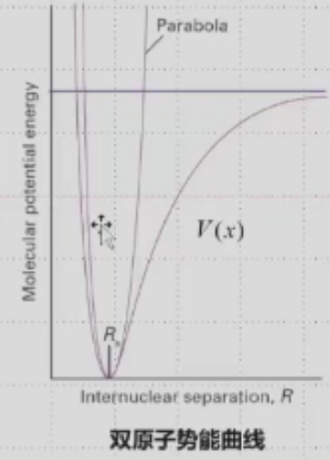
\(\boldsymbol{x = R - R_e}\)（相对于平衡位置的核位移）
\(V(x)\) 为分子实际势能曲线，Parabola 为简谐近似的抛物线势能
势能在最低点\(x=0\)的泰勒展开
- \(V(0)\)：平衡位置的势能，可设为势能零点，取值为0
- \(\left(\frac{dV}{dx}\right)_0\)：势能在平衡位置的一阶导数，势能最低点处一阶导数为0，该项为0
- \(x^3\)及以上的高阶小项，在简谐近似下忽略
谐振子近似: 量子简谐振子
其中弹簧力常数 \(k = \left(\frac{d^2V}{dx^2}\right)_0\)，即势能曲线在平衡位置的二阶导数。
振动能级¶
一维谐振子薛定谔方程： $$ \begin{aligned} \left( -\frac{\hbar^2}{2\mu}\frac{\partial^2}{\partial x^2} + V(x) \right) \psi = E \psi \end{aligned} $$
约化质量： $$ \begin{aligned} \mu = \frac{m_1 m_2}{m_1 + m_2} \end{aligned} $$
振动能级（\(\boldsymbol{J}\)） $$ \begin{aligned} E_v = \left(v+\frac{1}{2}\right)\hbar\omega \end{aligned} $$
角频率： $$ \begin{aligned} \omega = \sqrt{\frac{k}{\mu}} \end{aligned} $$
振动量子数： $$ \begin{aligned} v = 0,\ 1,\ 2\dots \end{aligned} $$
振动能级（\(\boldsymbol{\text{cm}^{-1}}\)） $$ \begin{aligned} \tilde{G}_v = \left(v+\frac{1}{2}\right)\tilde{\nu} \end{aligned} $$
振动波数： $$ \begin{aligned} \tilde{\nu} = \frac{1}{2\pi c}\sqrt{\frac{k}{\mu}} \end{aligned} $$
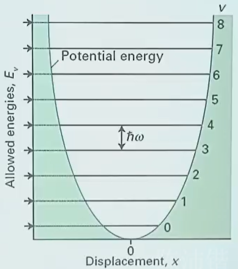
-
振动零点能，在绝对零度也有振动（不确定原理：若静止则位置和动量可同时确定）
-
振动能级等间隔
振动波函数¶
$$ \begin{aligned} \psi_v(x) = N_v H_v(y) e^{-y^2/2} \end{aligned} $$ 其中：
-
\(N_v\)：谐振子波函数归一化常数
-
\(H_v(y)\)：\(v\)阶厄米多项式
-
无量纲变量：\(\displaystyle y = \frac{x}{\alpha}\)
-
特征长度参数：\(\displaystyle \alpha = \left( \frac{\hbar^2}{\mu k_f} \right)^{1/4}\)，\(\mu\)为约化质量，\(k_f\)为振动力常数
| 振动量子数 \(v\) | 厄米多项式 \(H_v(y)\) |
|---|---|
| 0 | \(1\) |
| 1 | \(2y\) |
| 2 | \(4y^2 - 2\) |
| 3 | \(8y^3 - 12y\) |
| 4 | \(16y^4 - 48y^2 + 12\) |
| 5 | \(32y^5 - 160y^3 + 120y\) |
| 6 | \(64y^6 - 480y^4 + 720y^2 - 120\) |
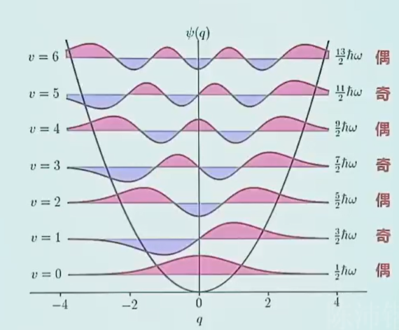
4.2 振动光谱选择定则¶
4.2.1 跃迁偶极¶
振动能级跃迁偶极矩 $$ \begin{aligned} \mu_{if} = \left\langle \psi_{v'}(x) \left| \vec{\mu}(x) \right| \psi_v(x) \right\rangle \end{aligned} $$
偶极矩随核位移的变化：原子间距离改变的同时影响了电荷的空间分布，偶极随核位移变化非线性。
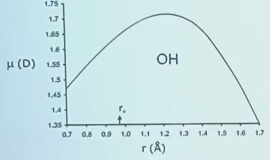
电偶极\(\vec{\mu}\)是\(x\)的函数，在平衡位置附近做泰勒展开：
忽略高阶项，认为电偶极矩在平衡位置附近是\(x\)的线性函数。
跃迁偶极矩的拆分
其中\(\mu_0 = \mu_{x=0}\)，为平衡位置的固有偶极矩。
4.2.2 选择定则¶
振动跃迁非零条件 $$ \left( \frac{\partial \mu}{\partial x} \right)_0 \left\langle \psi'(x) \left| x \right| \psi(x) \right\rangle \neq 0 $$
① $$ \boldsymbol{\left( \frac{\partial \mu}{\partial x} \right)_0 \neq 0} $$
电偶极矩大小需要随振动发生改变
-
同核双原子分子： $$ \begin{cases} \vec{\mu}_e = 0 \ d\vec{\mu}/dr = 0 \end{cases} $$
-
异核对称分子： $$ \begin{cases} \vec{\mu}_e \text{ 可能} = 0 \ d\vec{\mu}/dr \text{ 可能} \neq 0 \end{cases} $$
线性三原子分子（CO₂型）：对称伸缩非红外活性（有振动能级，但红外谱上看不到），非对称伸缩和弯曲振动（xz和yz平面，像水分子）具有红外活性。
② $$ \left\langle \psi'(x) \left| x \right| \psi(x) \right\rangle \neq 0 $$
其中\(\delta_{i,j}\)为克罗内克δ函数。
振动跃迁选择定则 $$ \boldsymbol{\Delta v = \pm 1} $$
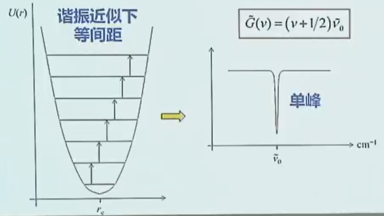
-
谐振近似下振动能级等间距 能级公式： $$ \tilde{G}(v) = \left(v+\frac{1}{2}\right)\tilde{\nu}_0 $$
-
光谱特征： 跃迁对应单峰，峰位置为\(\tilde{\nu}_0\)，横坐标为波数\(\text{cm}^{-1}\)。
室温下的振动布居与光谱特征
-
室温下，\(k_\text{B}T \sim 200\ \text{cm}^{-1}\)
-
转动能隙大，较难通过热运动跃迁，大部分分子都处于振动基态，\(v=0\)
-
主要的跃迁来自\(v=0 \to 1\)，表现出单个跃迁谱线
常见振动光谱：
4.3 振动非谐性¶
4.3.1 莫尔斯（Morse）势¶
曲线右侧开口，能量较高时键断裂，更接近真实势能曲线。
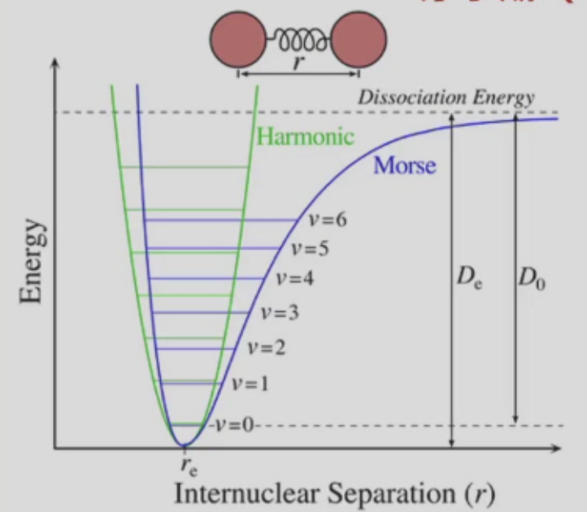
只有在平衡位置附近的低能级振动满足简谐振子模型
莫尔斯势表达式
其中参数：
-
\(x = r - r_e\)：相对于平衡位置的核位移
-
\(k\)：振动力常数
-
\(D_e\)：势能曲线最小值对应的深度
4.3.2 非谐振动能级¶
能级公式（\(\boldsymbol{J}\)）
能级公式（\(\boldsymbol{\text{cm}^{-1}}\)） $$ \begin{aligned} \tilde{G}_v = \left(v+\frac{1}{2}\right)\tilde{\nu}_e - \left(v+\frac{1}{2}\right)^2 \tilde{\nu}_e \chi_e \end{aligned} $$
后项作为非谐修正，在\(v\)大时产生显著影响
非谐常数 $$ \begin{aligned} \chi_e = \frac{\alpha^2 h}{2\mu\omega} = \frac{\tilde{\nu}}{4D_e} \end{aligned} $$
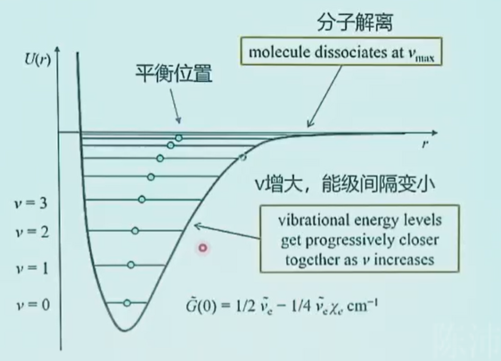
与谐振子近似不同，平衡位置向右移动，化学键变长。
这里的平衡位置理解成振动的平均核间距似乎更好，平衡位置指势能最低点。
4.3.3 选律与光谱¶
倍频（泛频）跃迁¶
所有跃迁都从振动基态\(\boldsymbol{v=0}\)出发，核心差异为振动量子数变化量\(\Delta v\)
-
基带（基频）跃迁：\(\boldsymbol{v=0 \to v=1}\)，\(\Delta v=+1\)，对应光谱主峰，信号最强
-
第一倍频（第一泛频）：\(\boldsymbol{v=0 \to v=2}\)，\(\Delta v=+2\)
-
第二倍频（第二泛频）：\(\boldsymbol{v=0 \to v=3}\)，\(\Delta v=+3\)
倍频跃迁是非谐性的直接结果：
-
简谐近似下，振动选择定则严格为\(\Delta v=\pm1\)，倍频跃迁完全禁阻
-
非谐性放宽了选择定则，使\(\Delta v=\pm2、\pm3\dots\)的跃迁不再严格禁阻，可以发生
倍频跃迁信号强度远弱于基频峰：跃迁偶极矩极小，第一倍频强度不足基频的1/20，高阶倍频信号更弱。峰位略低于基频的整数倍（非谐性导致能级间隔随\(v\)升高减小）。倍频峰在分析中十分常用。
基带与热带跃迁¶
-
基带跃迁（Fundamental band）：\(\boldsymbol{v=0 \to v=1}\)，从振动基态出发的跃迁，对应红外光谱的基频主峰，信号最强。
-
热带跃迁（Hot band）：从振动激发态出发的跃迁，典型如：
-
第一热带：\(\boldsymbol{v=1 \to v=2}\)
-
第二热带：\(\boldsymbol{v=2 \to v=3}\)
热带跃迁信号远弱于基带，核心原因是玻尔兹曼分布。
简谐近似下，所有\(\Delta v=+1\)的跃迁能量相同，基带与热带谱线完全重合。非谐性下，振动能级间隔随\(v\)升高逐渐减小，不同初始态的\(\Delta v=+1\)跃迁能量不同，基带与热带跃迁的谱线不再重合，热带跃迁峰向低波数方向偏移。
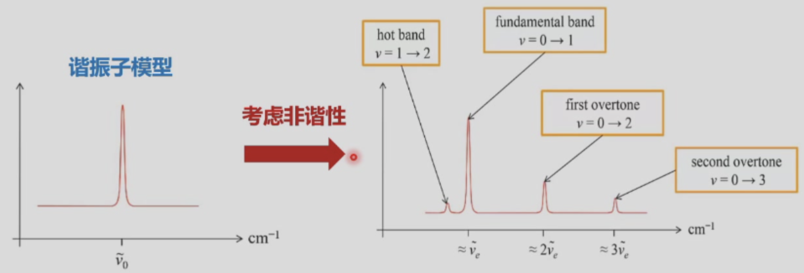
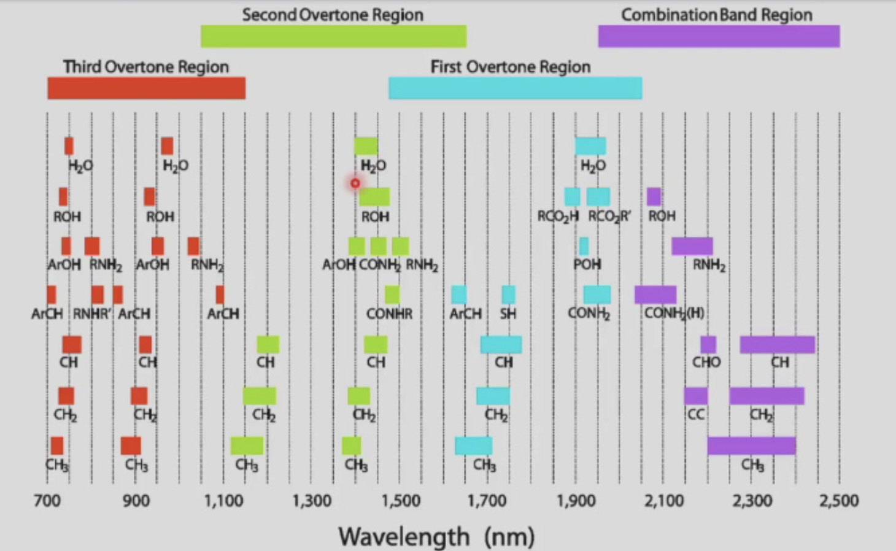
4.4 振-转跃迁¶
振动能级无需在微波区域观察，中红外也可看到。
4.4.1 哈密顿量与能级¶
刚性转子-谐振子模型（忽略振动对转动的影响）
振动与转动运动相互独立，总哈密顿量为振动项与转动项之和：
总波函数为振动波函数与转动波函数的乘积（波恩-奥本海默近似下可分离）：
振-转总能量公式 能量单位：\(\boldsymbol{\text{J}}\)
波数单位：\(\boldsymbol{\text{cm}^{-1}}\)
振动能级的整体间隔（\(v=0\)到\(v=1\)的能量差），远大于同一个振动能级内不同J的转动能级间隔（振动能级差一般在数百～数千\(cm^{−1}\)，对应红外光；转动能级差一般在数\(cm^{−1}\)，对应远红外 / 微波区）。呈现出能级的两层结构：振动主能级 + 转动精细能级
4.4.2 选择定则¶
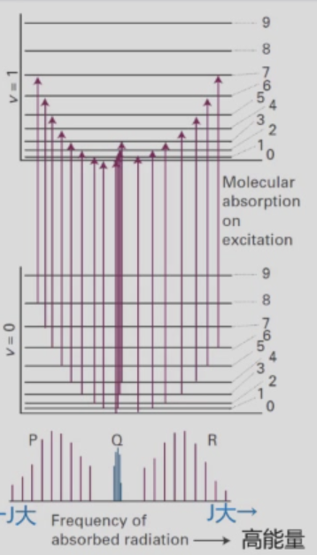
（图片下方单峰和左右应也是等间距）
红外活性前提（跃迁允许的核心条件）
跃迁选律¶
特殊情况
\(\Delta J = 0\) 仅适用于非零电子角动量（非满壳层）的分子（示例：NO），闭壳层分子的\(\Delta J=0\)跃迁为禁阻跃迁。具体解释见下。
振-转吸收光谱的三大分支¶
P分支
- 跃迁波数：
- \(J\)为跃迁前低能级的转动量子数，取值为\(J=1,2,3...\)；\(J=0\)无对应跃迁（\(J-1=-1\)为不存在的量子态）。所有P分支谱线都位于振动中心波数\(\tilde{\nu}\)的低波数侧。
Q分支
- 跃迁波数：
- 仅非满壳层、有固有电子角动量的分子可观测到该分支；绝大多数闭壳层异核双原子分子中，该跃迁为禁阻跃迁，无Q分支。理想刚性转子-谐振子模型下，所有Q分支的跃迁波数都等于振动特征波数\(\tilde{\nu}\)，会重合为单峰。
R分支
- 跃迁波数：
- 公式中\(J\)为跃迁前低能级的转动量子数，取值为\(J=0,1,2,3...\)。所有R分支谱线都位于振动中心波数\(\tilde{\nu}\)的高波数侧。
\(ΔJ=0\) 振转跃迁选律¶
| 符号 | 物理意义 | 核心规则 |
|---|---|---|
| \(J_{photon}\) | 红外光子角动量 | 固定为\(\boldsymbol{1\hbar}\)（1个单位角动量，分子吸收时必须承接） |
| \(R\) | 分子转动角动量 | 对应转动量子数\(J\)，分子整体绕质心转动的角动量 |
| \(J_e\) | 分子电子总角动量(来自旋轨耦合) | 闭壳层分子：\(J_e\equiv0\)（电子全成对，角动量完全抵消）；非满壳层分子：\(J_e\neq0\)（含未成对电子，有未抵消的角动量） |
| \(J_{total}\) | 分子总角动量 | 矢量和：\(\boldsymbol{J_{total} = R + J_e}\)，跃迁选律的\(\Delta J=0\)即\(\Delta J_{total}=0\) |
吸收光子的过程中，「分子+光子」系统总角动量严格守恒：
光子角动量固定为\(1\hbar\)，\(\Delta J_{total}=0\)能否实现，完全取决于分子是否有\(J_e\neq0\)这个「可调节的角动量池」。
总角动量不变要求\(\Delta J_{total} = \Delta R + \Delta J_e = 0\)，即：
转动角动量承接光子的\(1\hbar\)，电子角动量反向抵消增量，总角动量保持不变。
举例： 初始\(J_{e,initial}=2\hbar\)，\(R_{initial}=1\hbar\)；\(J_{initial,total}=2\hbar+1\hbar=3\hbar\) 吸收光子（携带\(1\hbar\)）后：
- 转动承接光子角动量：\(R_{final}=1\hbar+1\hbar=2\hbar\)，\(\Delta R=+1\hbar\)
- 电子角动量反向抵消：\(J_{e,final}=2\hbar-1\hbar=1\hbar\)，\(\Delta J_e=-1\hbar\)
\(J_{final,total}=1\hbar+2\hbar=3\hbar\)，\(\Delta J_{total}=0\)成立，跃迁允许。
闭壳层分子\(J_e\equiv0\)，无角动量缓冲池，总角动量完全等于转动角动量：
守恒公式简化为\(R_{final}=R_{initial}+1\hbar\)，转动角动量必须变化\(\Delta R=\pm1\)，\(ΔJ=0\)直接违背角动量守恒。
非谐修正¶
高振动能级（振动激发态）\(\boldsymbol{\rightarrow}\) 键长变长 \(\boldsymbol {\rightarrow}\) \(\begin{cases} \text{转动惯量变大} \\ \text{转动常数变小} \end{cases}\)
转动常数公式：
转动常数大小关系：
P分支
\(\boldsymbol{\Delta J = -1}\)
跃迁波数公式（非谐修正）：
规律：\(\boldsymbol{J}\)越大，P分支的间隔越大
R分支
\(\boldsymbol{\Delta J = +1}\)
跃迁波数公式（非谐修正）：
规律：\(\boldsymbol{J}\)越大，R分支的间隔越小
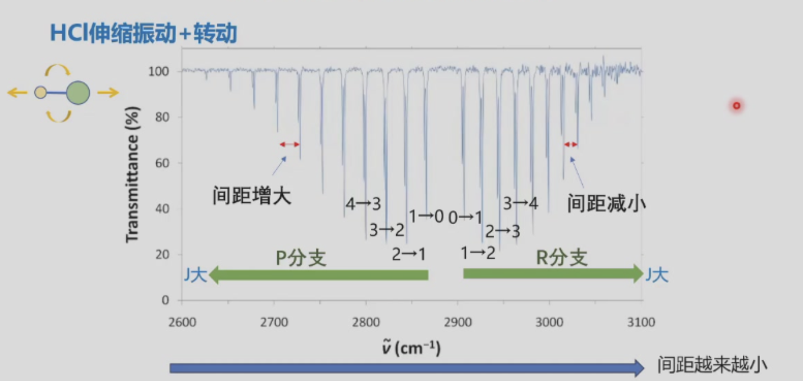
转动常数的计算¶
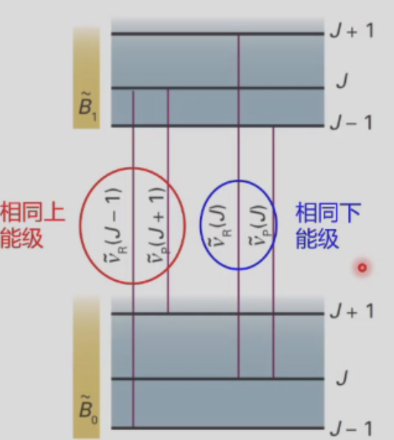
例：\(^1\text{H}^{35}\text{Cl},\ \tilde{B}_0 = 10.440\ \text{cm}^{-1},\ \tilde{B}_1 = 10.136\ \text{cm}^{-1}\)